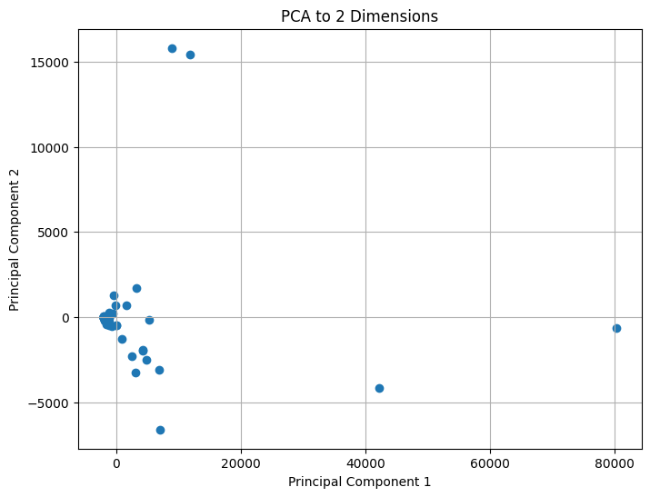
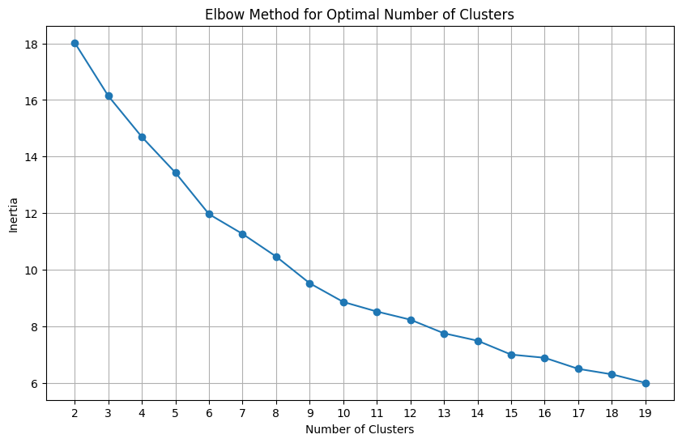
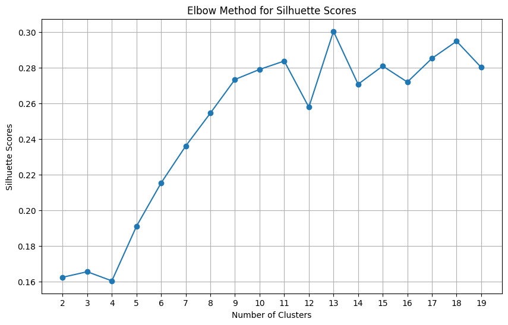
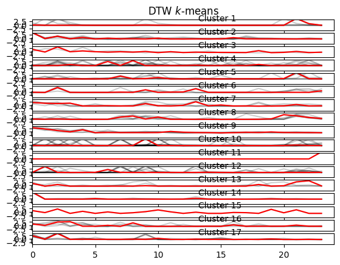
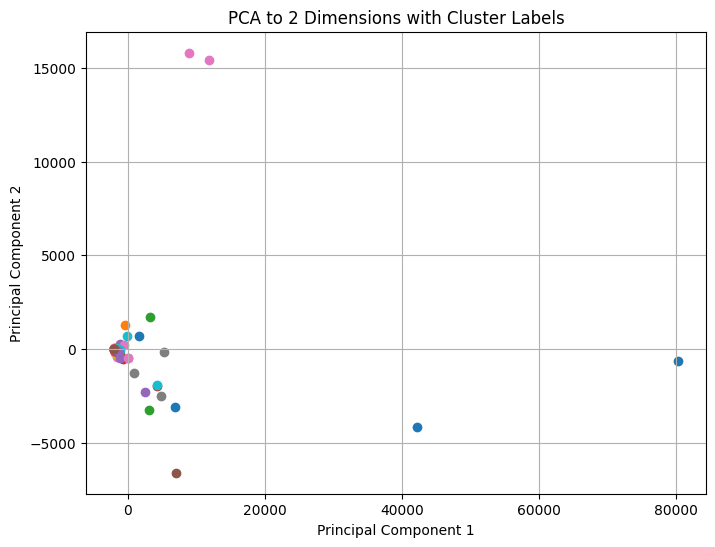
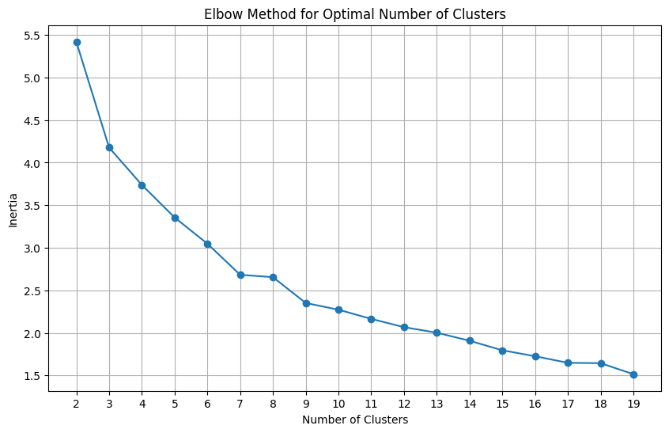
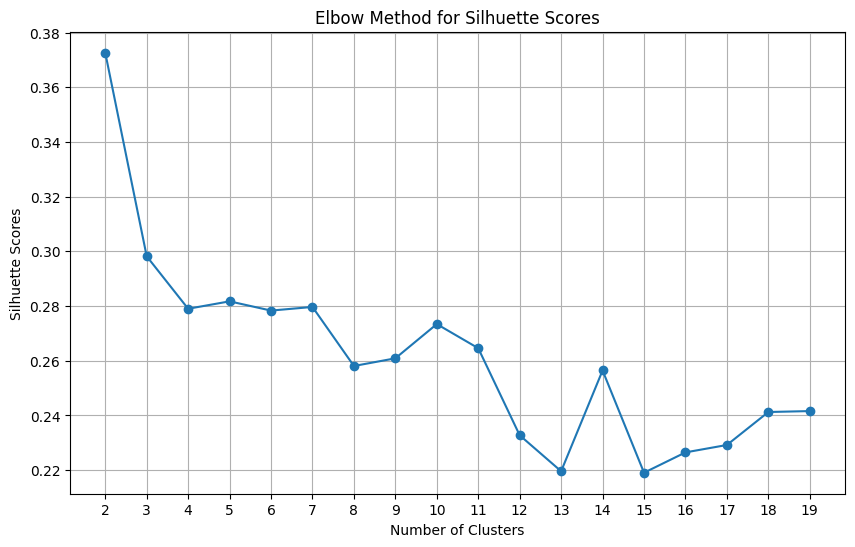
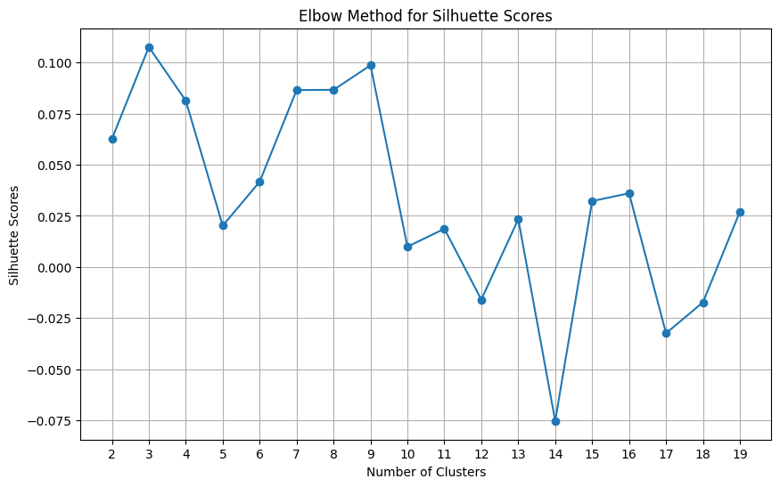

04: Time Series Clustering#
The general formulation of time series clustering problem is:
Where we want to minimize the distance of each pair of time series data points. The centroids in traditional KNN’s are points, whereas in TSC are sequences of points also called barycenters with respect to the metric distance used.
Let’s consider these dataset which has data from multiple hierarchical layers: Total -> Prod Family -> Product
Metrics#
return { “n_clusters”: n_clusters, “silhouette_score”: metrics.silhouette_score(X, predicted), “calinski_harabasz_score”: metrics.calinski_harabasz_score(X, predicted), “davies_bouldin_score”: metrics.davies_bouldin_score(X, predicted), “inertia”. model_object.inertia_ }
---------------------------------------------------------------------------
ModuleNotFoundError Traceback (most recent call last)
Cell In[1], line 2
1 import matplotlib.pyplot as plt
----> 2 from tslearn.clustering import TimeSeriesKMeans
3 from tslearn.preprocessing import TimeSeriesScalerMeanVariance
4 import pandas as pd
ModuleNotFoundError: No module named 'tslearn'
Visualizing data onto 2D projection#

Euclidean KMeans#
In this example we will use the inertia scores and silhouette scores to test the fitness of clustering algorithms. The Eucliden KMeans uses as metric the euclidean distance between analogous points of the time series.
xt and ytyt represent the values of the time series XX and YY at time tt respectively.
T is the length of the time series, representing the number of data points
X is the barycenter for T = t, Y is the time series
Size invariance#
Before diving into the algorithm, lets consider the problem framing. Clustering is sensitive to spatial distance and thus its spatial aware. One way to deal with this is by transforming the data by a scaling function. The TimeSeriesScalerMeanVariance class scales the input vectors into (0, 1) - (\(\mu\), \(\sigma\)) reducing the size effects between time series.
Downsides#
Loss of information: Scaling time series will eventually lead to data degradation by stretching and compressing data.
Impact on seasonality and trends: this has to do with the time horizon chosen. For long term series, the scaling will dampen the amplitude of seasonal patterns and trends. For instance, in a non stationary time series, the local properties of the series won’t be the same accross the time spawn.
Normalization bias: the bias introduced in giving a Gaussian distribution to a non Gaussian series
Time invariance#
This is outside of the scope of this analysis. Which means that time series with lags may not be appropriately clustered.
Number of clusters: 2, Inertia: 18.02338633061857
Number of clusters: 3, Inertia: 16.141003005800567
Number of clusters: 4, Inertia: 14.691878587239723
Number of clusters: 5, Inertia: 13.429196404344774
Number of clusters: 6, Inertia: 11.962993892680958
Number of clusters: 7, Inertia: 11.263981448621788
Number of clusters: 8, Inertia: 10.464235224325906
Number of clusters: 9, Inertia: 9.51965202368137
Number of clusters: 10, Inertia: 8.859590096845437
Number of clusters: 11, Inertia: 8.520474838526816
Number of clusters: 12, Inertia: 8.232545820335634
Number of clusters: 13, Inertia: 7.751171603960899
Number of clusters: 14, Inertia: 7.48993792916117
Number of clusters: 15, Inertia: 6.99863140120731
Number of clusters: 16, Inertia: 6.885549503705598
Number of clusters: 17, Inertia: 6.494676404114721
Number of clusters: 18, Inertia: 6.301125000865093
Number of clusters: 19, Inertia: 5.999819863059946
Best number of clusters: 19, Min Inertia: 5.999819863059946

Silhouette scores#
The Silhouette scores do not appear consistent nor robust. The suggestion is to use a number of initializations param “n_init” > 10. It essentially defines the batch size and improves convergence robustness.

C:\Users\Miguel\AppData\Local\Temp\ipykernel_8936\1629654913.py:23: UserWarning: Tight layout not applied. tight_layout cannot make axes height small enough to accommodate all axes decorations.
plt.tight_layout()
1.7914972467700838


Dynamic Time Warping#
Number of clusters: 2, Inertia: 5.420586151711464
Number of clusters: 3, Inertia: 4.177304652832527
Number of clusters: 4, Inertia: 3.738524798373651
Number of clusters: 5, Inertia: 3.355609905212012
Number of clusters: 6, Inertia: 3.047946604392453
Number of clusters: 7, Inertia: 2.6824537222464815
Number of clusters: 8, Inertia: 2.6551042978969828
Number of clusters: 9, Inertia: 2.351653098282396
Number of clusters: 10, Inertia: 2.2726030892463607
Number of clusters: 11, Inertia: 2.1646271210243997
Number of clusters: 12, Inertia: 2.0675028000743736
Number of clusters: 13, Inertia: 2.002537714616747
Number of clusters: 14, Inertia: 1.9077890543759322
Number of clusters: 15, Inertia: 1.7959126600725064
Number of clusters: 16, Inertia: 1.7257878891101073
Number of clusters: 17, Inertia: 1.648691026393821
Number of clusters: 18, Inertia: 1.644524936567957
Number of clusters: 19, Inertia: 1.5149108879433901
Best number of clusters: 19, Min Inertia: 1.5149108879433901


Soft DTW#
